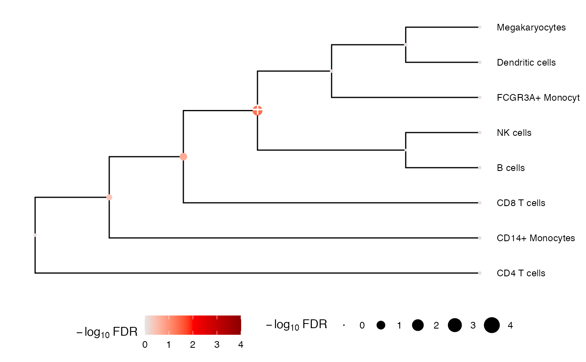

Perform multivariate testing using mvTest() along the nodes of tree
Usage
treeTest(
fit,
obj,
hc,
coef,
method = c("FE.empirical", "FE", "RE2C", "tstat", "sidak", "fisher"),
shrink.cov = TRUE
)Arguments
- fit
- obj
EListobject returned byvoom()- hc
hierarchical clustering as an
hclustobject- coef
name of coefficient to be extracted
- method
statistical method used to perform multivariate test. See details.
'FE'is a fixed effect test that models the covariance between coefficients.'FE.empirical'use compute empirical p-values by sampling from the null distribution and fitting with a gamma.'RE2C'is a random effect test of heterogeneity of the estimated coefficients that models the covariance between coefficients, and also incorporates a fixed effects test too.'tstat'combines the t-statistics and models the covariance between coefficients.'sidak'returns the smallest p-value and accounting for the number of tests.'fisher'combines the p-value using Fisher's method assuming independent tests.- shrink.cov
shrink the covariance matrix between coefficients using the Schafer-Strimmer method
Details
See package remaCor for details about the remaCor::RE2C() test, and see remaCor::LS() for details about the fixed effect test. When only 1 feature is selected, the original t-statistic and p-value are returned.
Examples
library(variancePartition)
# Load cell counts, clustering and metadata
# from Kang, et al. (2018) https://doi.org/10.1038/nbt.4042
data(IFNCellCounts)
# Apply crumblr transformation
cobj <- crumblr(df_cellCounts)
# Use dream workflow to analyze each cell separately
fit <- dream(cobj, ~ StimStatus + ind, info)
fit <- eBayes(fit)
# Perform multivariate test across the hierarchy
res <- treeTest(fit, cobj, hcl, coef = "StimStatusstim")
# Plot hierarchy and testing results
plotTreeTest(res)

# Extract results for first 3 nodes
res[1:3, ]
#> # A tibble: 3 × 9
#> node beta se stat pvalue n_features lambda method FDR
#> <int> <dbl> <dbl> <dbl> <dbl> <dbl> <dbl> <chr> <dbl>
#> 1 1 -0.105 0.0348 -3.01 0.0137 1 0.01 FE.empirical 0.0513
#> 2 2 -0.105 0.0337 -3.12 0.0114 1 0.01 FE.empirical 0.0513
#> 3 3 -0.0784 0.0351 -2.23 0.0509 1 0.01 FE.empirical 0.109